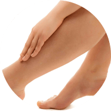
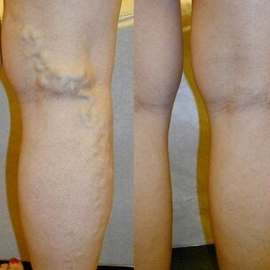
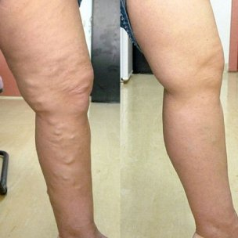

Opinia că este imposibil să scapi de varice fără intervenție chirurgicală și
într-un timp scurt a devenit ferm înrădăcinată în mintea oamenilor obișnuiți. În ciuda
faptului că această afirmație a devenit de fapt irelevantă în anii 2000, mulți încă mai cred că
acesta este cazul.
Cu toate acestea, de fapt, știința nu se oprește, mai ales în domeniul flebologiei
(o știință care studiază structura, funcția și patologia vaselor de sânge). Una dintre cele mai recente
descoperiri mondiale este gel care ajută la scăderea simptomelor venelor varicoase . Este
recunoscut de experți drept cel mai bun remediu care ajută la eliminarea varicelor. Un produs inovator
aceasta va ajuta la normalizarea circulației sângelui, la prevenirea apariției
asteriscelor vasculare, este capabilă să ofere o ușurare eficientă a simptomelor venelor varicoase la
domiciliu în 1 lună.
Simptome de varice
Capilare anormal dilatate
Vase de sânge umflate și bombate
Erupții cutanate
Mâncărime și greutate în picioare
caracteristicile

Ajută la ameliorarea umflăturilor și a durerii
Ajută la reducerea dilatației capilare anormale
Stimulează circulația sângelui
Ajută la netezirea și hidratarea pielii
Cu utilizarea regulată, vă va ajuta:
La îndepărtarea durerii și umflării, restabilirea fluxului sanguin natural.
La reducerea durerii și minimizării riscului formării cheagurilor de sânge.
Îmbunătățiți starea vaselor de sânge, restabiliți elasticitatea acestora.
Redacția «Hello Health» a intervievat specialiști cu mulți ani de experiență
în domeniul flebologiei. Toți au spus același lucru: recomandă cu tărie clienților.
Anton Gheorghiu, specialist în domeniul fleborogiei (peste 30 de ani de
experiență). În practica mea, au existat mai multe cazuri de clienți operați înainte.
Acest lucru apare de obicei în a treia sau a patra etapă a varicelor. Cu toate acestea, apariția
gelului a schimbat radical situația.
Acest produs minunat poate ajuta atât în stadiile incipiente ale apariției
varicelor, cât și în cazurile severe când pare imposibil de făcut fără intervenție
chirurgicală. Acum recomand intervenția chirurgicală doar în cazuri foarte dificile și vă sfătuiesc să
încercați mai întâi să rezolvați problema cu acest gel.
fără îndoială, cel mai bun produs pentru a scăpa de simptomele
varicelor și pentru a preveni apariția acesteia, la domiciliu.
Iată rezultatele înainte și după 1 lună de utilizare a acestui gel:
Anastasia Florescu, expert în sănătate vasculară (mai mult de 11 ani de
experiență). Fără îndoială, unul dintre avantajele este compoziția sa. Acest
gel conține ingrediente naturale unice care ajută eficient la eliminarea cauzelor varicelor.
Vreau să subliniez că, datorită cantității mari de flavonoide, taninuri și vitamine
conținute în extractul de castane, gelul ajută la creșterea tonusului capilar și la normalizarea
circulației sângelui.
Efectul utilizării acestui gel este pur și simplu uimitor. În opinia mea,
- este un produs revoluționar care schimbă radical abordarea de a scăpa de varice și vă permite să faceți față
fără operații dureroase și costisitoare. Acest gel poate fi folosit de oameni de toate vârstele!
Daniel Lupu, un specialist de frunte în domeniul flebologiei (mai mult de
30 de ani de experiență). Pentru a ajuta la varice, recomand cu tărie să utilizați
. Acest gel va face față cu ușurință chiar și cazurilor dificile, va ușura starea oamenilor cu
etapele a treia și a patra. Ajută la eliminarea cauzei varicelor, nu doar a simptomelor.
De asemenea, recomand utilizarea acestui gel în scopuri preventive pentru a
preveni cu siguranță apariția varicelor în viitor.
În practica mea, au existat multe cazuri când m-a ajutat cu cazuri
severe de varice. De exemplu:
Varice: pericolul în cifre
80%Femeile au simptome de insuficiență venoasă cronică
20%Persoanele care suferă de vene varicoase sunt forțate să se supună unei
operații periculoase
65%Au un
risc crescut de varice, mai ales dacă au existat cazuri de varice în familie
70%Femeile gravide suferă de vene varicoase
90%Femeile care poartă tocuri mai mari de 8 centimetri suferă de dureri de
picioare cel puțin o dată pe săptămână
Eficacitatea utilizării în cifre
100%Nu
simțiți durere sau oboseală la nivelul picioarelor
97%Ați
observat dispariția rețelei vasculare.
96%Normalizarea funcției sistemului circulator .
100%Nu am
observat efecte secundare.
95%Venele
bombate și inflamate au dispărut.
Produs 100% eficient
Gelul este certificat în UE și aprobat pentru utilizare în țările
europene. Veți simți o îmbunătățire după 1 lună de utilizare a ! Merită încercat!
Mihael, 45 de ani
Picioarele au devenit de culoare albăstruie, venele s-au umflat. Am
încetat să mai fac sport, dar problema nu a dispărut. Mi s-a spus că doar operația mă poate ajuta.
Dar gelul a rezolvat problema într-o lună! Picioarele au devenit din nou de culoare
normală.
Evgenia, 35 de ani
Aplic regulat gelul seara după muncă. Ameliorează rapid umflarea și
oboseala, precum și transpirația semnificativ redusă a picioarelor. Dimineața simt că picioarele mele
sunt ca noi. Îl recomand tuturor
Julia, 35 de ani
Gelul este o adevărată mântuire pentru mine. Îl folosesc
zilnic. La doar câteva săptămâni după ce am început să-l folosesc, am observat o scădere
vizibilă a vaselor bombate, picioarele mele au început să arate mai bine, mă simt ușor și energic
chiar și seara
Eliza, 38 de ani
Venele din picioarele mele se arătau puternic. La consultație, mi s-a spus
că pot fi îndepărtate doar chirurgical. Dar nu am vrut operație. Nu am vrut ca picioarele mele să
aibă urme și cicatrici. Am decis să încerc gelul , după 4 săptămâni de utilizare,
durerea și umflarea picioarelor mele au dispărut. O săptămână mai târziu, venele umflate
aproape au dispărut.

Monica, 41 de ani
De mulți ani am suferit de vene varicoase sub genunchi. Venele în mod
constant mă mâncau, uneori mă dureau. Anul trecut am observat că venele au început să se
umfle. Și am decis că trebuie să fac ceva. M-am dus la un specialist și m-a sfătuit să încerc
. A fost incredibil, dar am văzut diferența în prima săptămână de utilizare a acestui
gel. Mâncărimea și durerea au dispărut aproape imediat. Și după 2 săptămâni am observat că
venele de sub genunchi aproape au dispărut.
Ana, 36 de ani
Am vene varicoase după sarcină. Crema care mi-a fost recomandată la farmacie
mi-a dat doar un rezultat temporar. Ciorapii de compresie erau prea strânși, era imposibil să mergi
în ei. Sinceră să fiu, aproape că am renunțat atunci și aproape că am decis să fac o operație, dar
am citit din întâmplare despre și l-am cumpărat. Am fost uimită de rezultat: nodurile
venoase de pe picioare aproape au dispărut. Acum picioarele mele sunt la fel de frumoase ca
înainte! Pot purta din nou fuste scurte!

Dina, 67 de ani
Am moștenit vene varicoase. Am suferit din cauza asta toată viața. În
tinerețe nu mă de deranja prea mult, dar odată cu vârsta a devenit foarte rău: venele ardeau de
foc, mai ales dacă stăteam toată ziua în picioare sau purtam genți grele. Fiica mea a cumpărat
recent și acest gel m-a salvat! Nu m-am gândit niciodată că voi putea scăpa de o problemă
care m-a afectat toată viața atât de repede. Am folosit acest gel în ultimele 6 luni și am
uitat de problemele cu venele.
ÎNTREBĂRI FRECVENTE
Ce efecte secundare pot exista? +
Gelul este format din ingrediente naturale, nu conține
parabeni, coloranți, arome sintetice și produse OMG. Produsul a fost certificat și nu are
contraindicații. Nu provoacă alergii și efecte secundare.
Cât timp trebuie folosit? +
Durata cursului depinde direct de stadiul varicelor. De obicei, după
1,5-2 săptămâni, primele rezultate ale aplicării gelului sunt deja vizibile.
De poate fi cumpărat? +
Compania noastră este singurul furnizor oficial a gelului din
Uniunea Europeană. Comanda poate fi făcută prin intermediul acestui site web. Cumpărați numai produsul
original !
Cât de repede pot obține gelul? +
În termen de 4-7 zile de la plasarea comenzii.
Consumatorul are dreptul sa notifice in scris comerciantului ca renunta la cumparare, fara penalitati si fara invocarea unui motiv, in termen de 10 zile lucratoare de la primirea produsului sau, in cazul prestarilor de servicii, de la incheierea contractului.